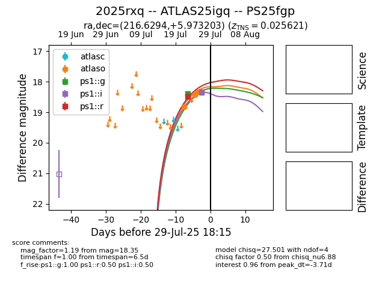

Target 2025rxq at 2025-08-08 16:46, see:
TNS: wis-tns.org/object/2025rxq
YSE: ziggy.ucolick.org/yse/transient_detail/2025rxq
alt names
2025rxq (yse,tns)
PS25fgp (panstarrs)
ATLAS25igq (atlas)
coordinates:
equatorial (ra, dec) = (216.6294,+5.97320)
galactic (l, b) = (354.1224,+59.03933)
photometry
last atlaso=18.25, ps1::g=18.35, ps1::i=18.33, ps1::r=18.49
7 atlaso, 2 ps1::g, 1 ps1::i, 1 ps1::r detections
